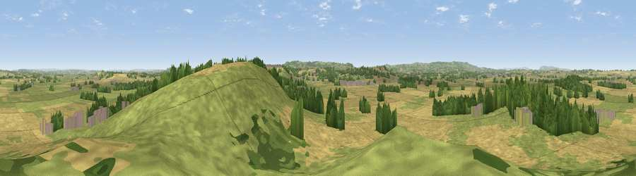

Viewpoint near Barrington
#11059 in England · top 25% of its area beats it · near BarringtonThe view, rendered

A 360° render of this exact spot computed from the terrain model, tree cover and land cover — summer colours, afternoon light, calibrated against photographs of famous viewpoints. Real trees, hedges and buildings will differ in detail.
The panorama
Grey silhouette: terrain skyline in each direction (720 bearings, Earth curvature and refraction included). Dashed green: skyline with trees (+15 m) and buildings (+8 m) as obstacles. Blue strip: how far the ground is visible on each bearing.
Where the view opens
Wedge length = distance to the farthest visible ground on that bearing (vegetation-aware). Rings at 10, 25 and 50 km.
What fills the view
49% grassland · 39% cropland · 10% woodland · 1% built-up
Angular shares of the visible panorama (visual magnitude), not map area. Landscape diversity 0.44 (0–1 Shannon).
Key numbers
More beautiful places nearby
The staircase of upgrades: each row has a higher view potential than everything closer. Driving times are estimates from straight-line distance, calibrated against real road routing — check an actual route before setting out.
| Place | Direction | Drive | Score |
|---|---|---|---|
| Viewpoint near Stocklinch | SE · 0 km | ~1 min | 64.3 |
| Burrow Hill | ENE · 4 km | ~9 min | 67.2 |
| Viewpoint near Curry Mallet | NW · 7 km | ~15 min | 68.0 |
| Viewpoint near Chaffcombe | SSW · 8 km | ~16 min | 68.8 |
| Viewpoint near Hewish | SSE · 8 km | ~17 min | 73.5 |
| Viewpoint near Hewish | SSE · 8 km | ~17 min | 78.5 |
| Viewpoint near Burstock | SSE · 17 km | ~30 min | 81.8 |
| Lewesdon Hill | SSE · 18 km | ~31 min | 83.3 |
50.95921, -2.88237 · source: screening · position refined by local search. Computed location — check access rights before visiting.